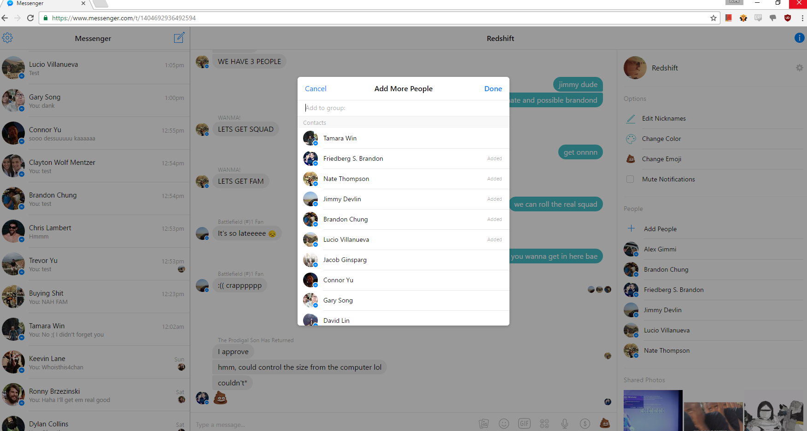
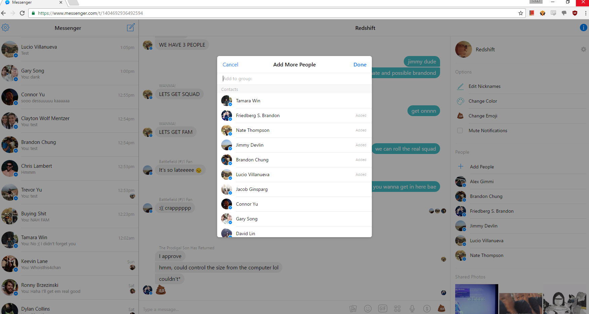

Welcome to Alex Gimmi's personal webpage.
This page was generated using GitHub Pages. Here you will find all of my HCI assignments for the semester. You can check out all my work on my GitHub, @iBroadband. It is a work in progress...
Why alexgim.me?
Well... the .mi domain doesn't exist yet, so I was forced to settle for less. The .me domain was unfortunately the best I could do. People spell it incorrectly this way all the time anyway.
HCI Individual Assignment 2
Find 2 examples of good user interface design, and 2 examples of bad user interface design.
Your examples should be specific. It's very hard to find a large interface that's completely good or completely bad, so don't try. Instead, focus on a particular feature or aspect of a user interface that makes your case. Avoid fuzzy words like “intuitive” and “user-friendly”. Find concrete reasons for your judgment.
You aren't limited to desktop software. Web sites offer many great candidates for fame and shame. You aren't even limited to traditional computer interfaces. Feel free to go out into the real world, and consider consumer appliances, car dashboards, building entrances, traffic intersections, shower controls, etc.
Your report should include 2 good examples and 2 bad examples. For each example:
- describe the purpose of the overall interface
- describe the particular aspect you find good or bad
- explain why it's good or bad (please make explicit reference to the principles covered on 9/8: visibility, mapping, feedback, consistency, etc).
- if bad, speculate why it might have been designed that way, and suggest a better design if possible
- illustrate with screenshots or photographs
The Good: Facebook Messenger
I personally really enjoy using Facebook Messenger. There are a few things that it does better than other messaging clients, but for the most part it is like the competition. However, it isn't the functionality that I enjoy the most from Messenger, it's the user experience. Creating new messages to new people is exteremely simple, as is creating a new group of friends to start a conversation with. Here is what users see when they first log in to the service.
One aspect of Facebook Messenger that is very good is it's capability for group messaging. It is both internally and externally consistent with common group conversation applications. Messenger allows you to add as few or as many people to the conversation as you'd like, and you don't need to be Facebook friends with them to do so. Here are a few things that make Messenger really stick out from the competition:
- Simple Design It look nice and it is very easy to navigate the application.
- User Control and Freedom For group conversations, I can easily add, remove, or edit members of the group.
- Quick User Feedback When a message is sent or received, a nice sound effect is played.
- Speak the User's Language The page uses extremely simple words. There is never a setting you don't understand.
- Prevent Errors In all my time using this application I have never once run into a system error.
 



The Good: GitHub Pages
I really enjoyed setting up this webpage using GitHub Pages. When you first navigate to the site, there is an introductory video to help you get started. Once you've watched it and decided GitHub Pages is the tool you need for your job, they offer step-by-step instructions on how to get your first webpage up and running in minutes. From idea to reality, this page only took about a half hour to get fully set up and ready for homework submissions.
The part of this application that I liked the most was the step-by-step instructions it gave you to set up and publish your first template. It took me less than 10 minutes to set up a simple template with example text on my custom domain. Below are some of the aspects of GitHub Pages that really stood out to me:
- Simple Design This page is extremely simple. It only offers you the information you absolutely need at the start.
- Quick User Feedback Feedback is immediate. The template you choose will show up at your domain very quickly.
- Speak the User's Language Despite GitHub being a home to a more "techie" crowd, I thought GitHub Pages kept it understandable.
- Help and Documentation At the bottom of the introduction page, there is a ton of documentation available via a link.
The Bad: Sadhana Boston
While my girlfriend was trying to register for a few yoga classes, she was having a very hard time navigating the webiste for the school, Sadhana Boston. It is not so hard to find classes and who is teaching them, but it is very difficult to find where a list of prices for each class. The rest of the site is pretty well set up, but prices should be a little more accessible.

The primary issue with finding the rates for yoga classes was that to find that page, you had to navigate through a sub-menu with a title that was not clearly marked to contain such information. Under the "About" tab, there is another option for "Rates and Policies." Because there were other menu tabs named "Schedule," and "Classes," I would not have expected to need to navigate to the "About" tab. A better way to organize this would have been to have the prices in the "Classes" tab or to allow users to click on a given class to see it's associated price. Here are a few other notable issues we had with the webiste.
- Simple Design Overall, the design is fine, but finding the prices was particularly difficult.
- Consistency It was not clear at the start that some of the menu tabs had sub-menu options.
- Help and Documentation There was no clear way for me to look at a list of all the available tab or anything like that.
- Minimize User Memory Load If you find your class in the "Classes" tab, you have to navigate to the "About-Rates" tab to find that price for that class.
The Bad: the100.io
Tomorrow, September 20th, the final DLC for the console video game "Destiny" releases. In anticipation of it's release, I have been using a website called the100. This site is used to organize playgroups and find similar players to game with. My biggest problem with this service is that it is very hard to communicate with other users quickly. They offer an in-client text messaging service, but it does not update in real time rendering it essentially useless. When users show up in groups asking to join and play, I would have to refresh the page in order to see their messages. In addition, users are supposed to sign up for playgroups in advance, so that when the time comes to play everyone is ready. However, there is no way to hold people accountable for actually showing up except for a "karma" system that no one pays attention to.

As you can see from the image, the layout of the website is fairly simple. The main focus of the site is on the users and groups, but there should be an equal amount of attention paid to communication between the two. Currently it is too hard to get in contact with members of any given group without using outside tools.
- Simple Design Overall, the design is fine, but communicating with other group members can be very difficult.
- Consistency The layout and buttons are internally consistent, but the text chat does not behave like any other text chat I have used before.
- Quick User Feedback This is the biggest problem. There is zero feedback to the user when sending and receiving messages.
Support or Contact
Contact me at contact@alexgim.me